[桃園] 轆轆 looloo coffee & restaurant
| 餐廳名稱: | 轆轆 looloo coffee&restaurant |
|---|---|
| 地 址: | 桃園市蘆竹區南順八街36號 |
| 營業時間: | 週二 ~ 週日 9:00~19:00 |
| 週一公休 | |
| 電 話: | 0902 366 302 |
今天與友人聚餐，挑了友人附近的 Google 高分餐廳，果然高分的貨真價實，食物口味不錯， 服務親切，裝潢舒適，附近還有公園跟私人停車場，真是很完美的一個小型聚餐場所。
轆轆 大門口。但是那個大門很容易誤會，我一開始搞不清楚推或拉，試了老半天開不起來， 還要女王來幫忙開門。坐在裡面時，也看到蠻多客人無法開門。我說老闆啊，妳門的兩邊黏個 “推” 跟 “拉” 字，應該沒那麼難吧。 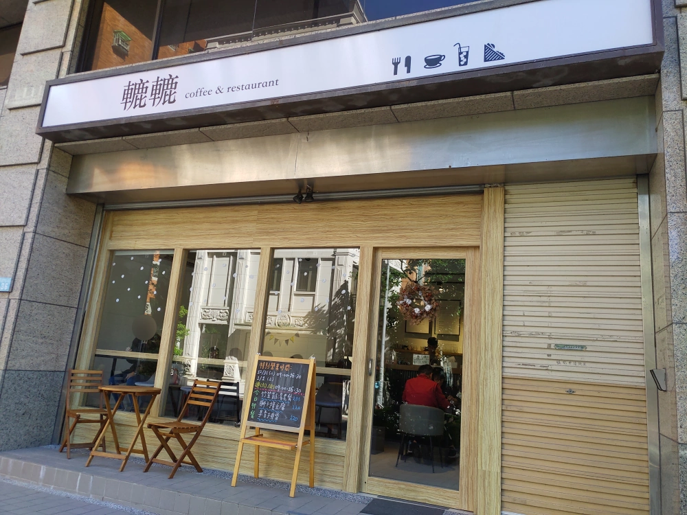
店內櫃台，其他每個角落都有人，等到最後就忘了照了。 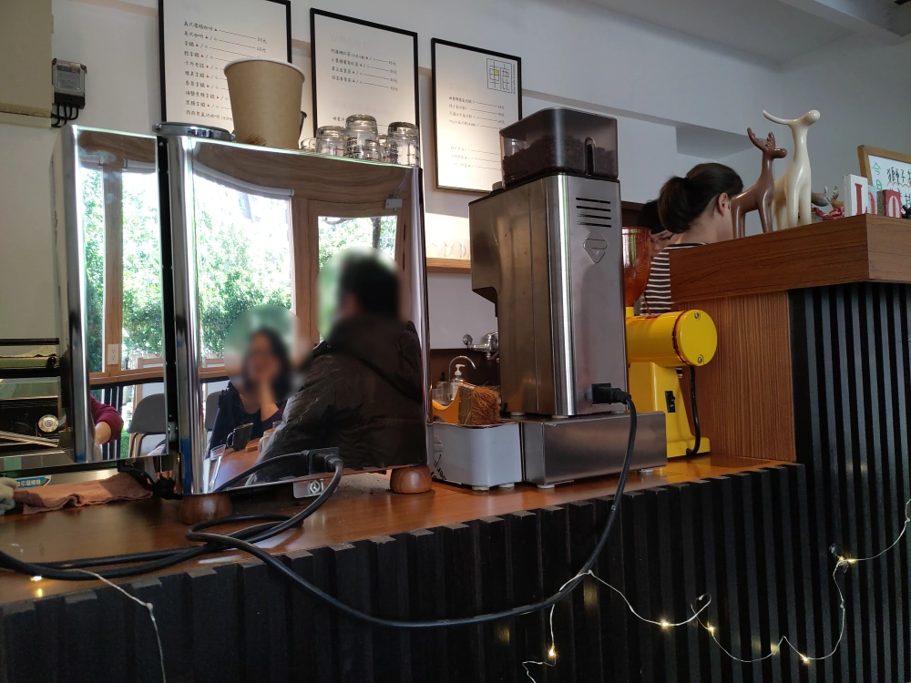
這是咖啡簡餐店，當然就是一堆飲料，跟老闆得意的數種 熱壓餅 或 簡餐 了。覺得菜單被縮得太小的， 可以按滑鼠右鍵選 檢視圖片，看解析度高一點的圖。 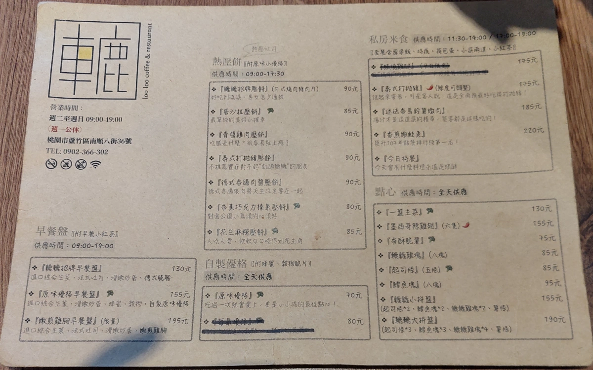 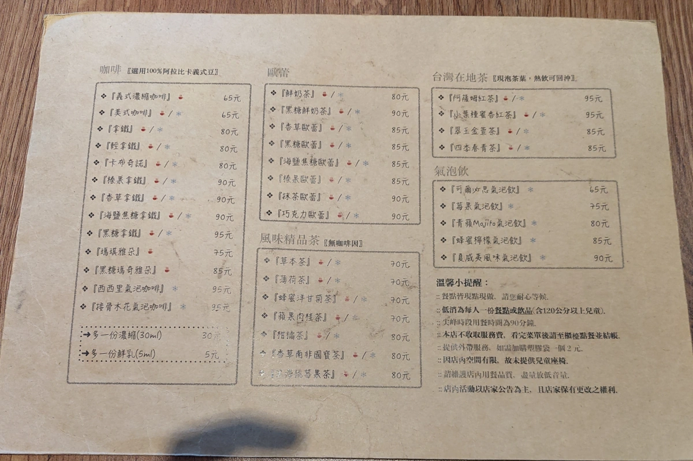
門口黑板 促銷三種簡餐。 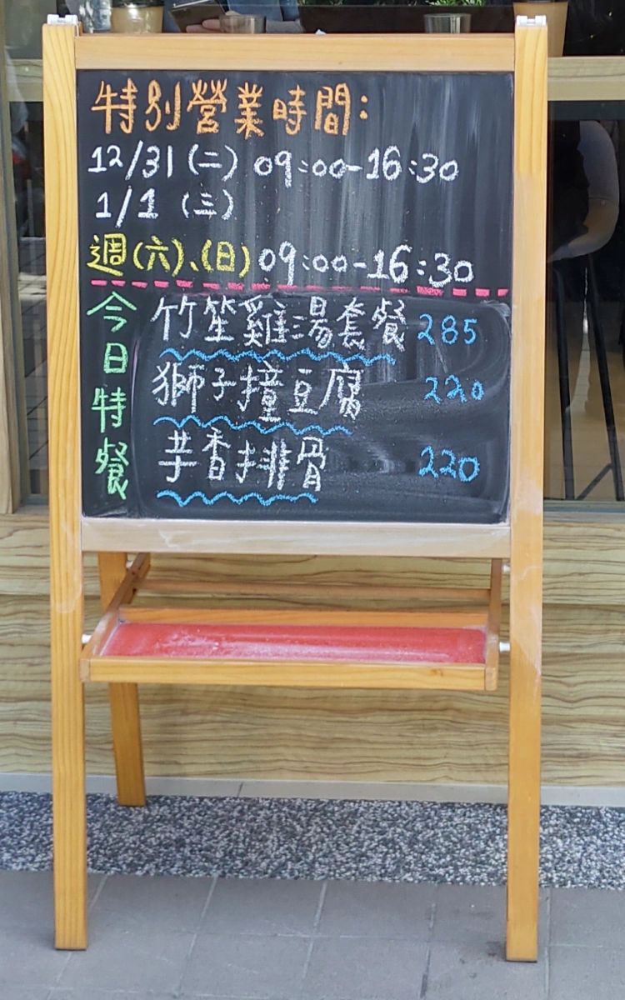
轆轆招牌早餐盤。飲料大概是拿鐵咖啡吧。早餐盤很正常，這樣的內容賣130元，難怪很多客人。 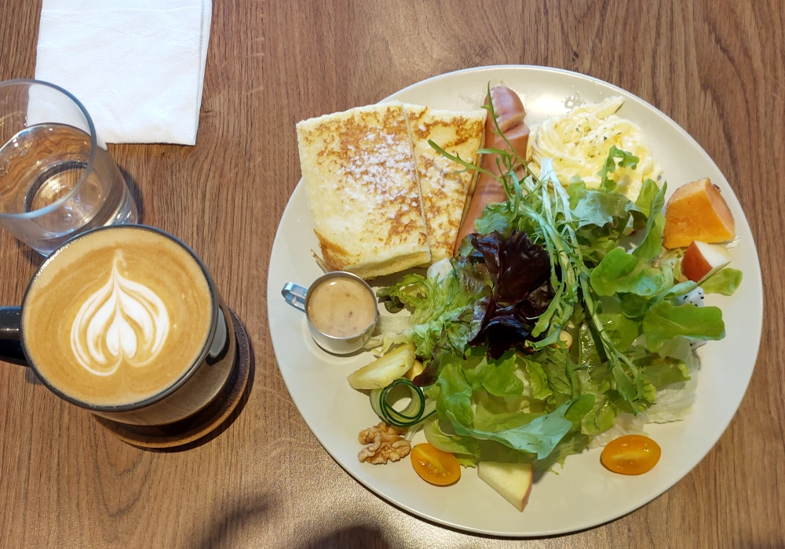
德式香腸肉醬壓餅。也是很正常。 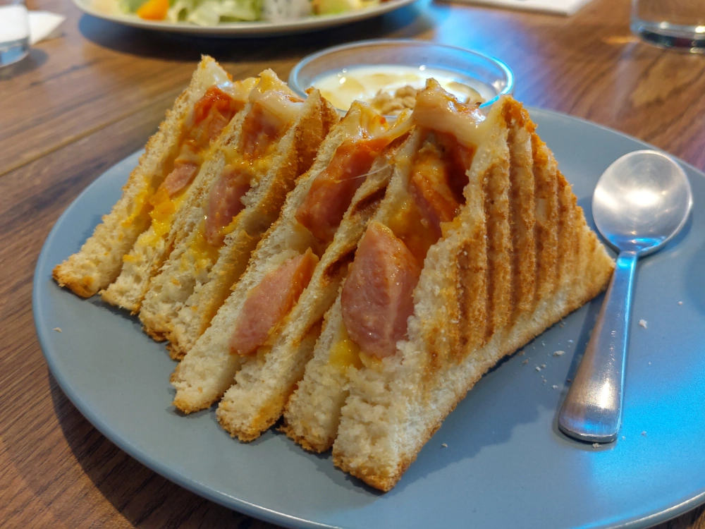
獅子撞豆腐。其實就是炸過的獅子頭 跟 豆腐煮在一起，湯感覺是豆瓣醬調的，辣度已經很低了。中規中矩的一道菜。 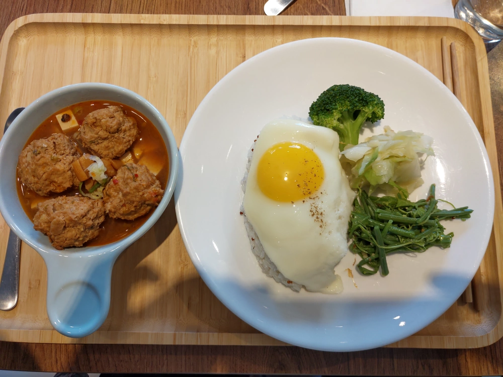
芋香雞腿，這道菜不在菜單上，是不知道點什麼，請老闆推薦，老闆就把這道私房菜拿出來。果然很有特色，湯頭熬得不錯，雞腿也嫩，整體很好吃。 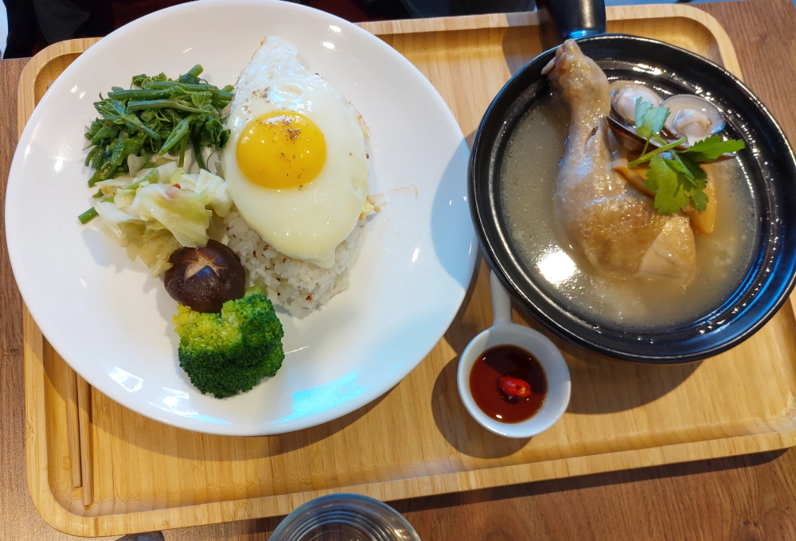
莓果氣泡飲。最近常看到這飲料，應該是上游供應商研發出來的吧，突然間很多飲料店、早餐店都有這個。 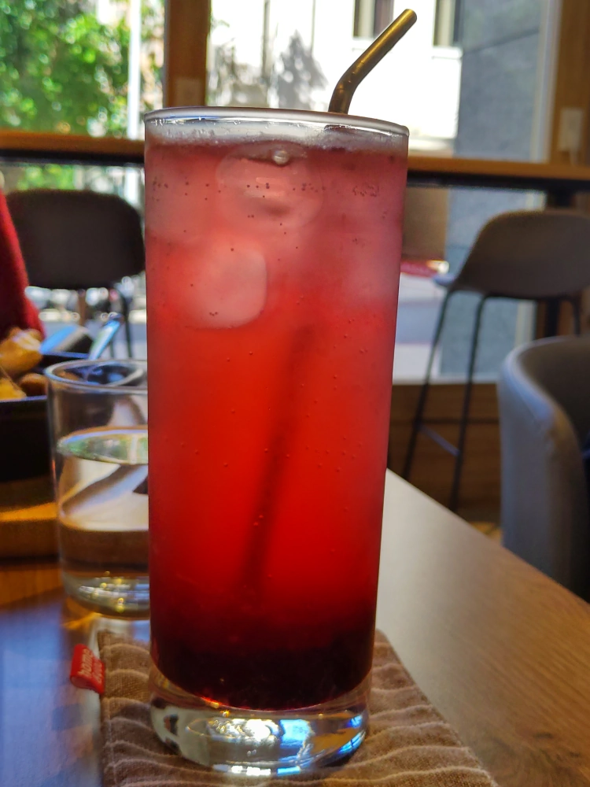
飲料可能是 焦糖瑪奇朵，有點忘了，只記得很正常。 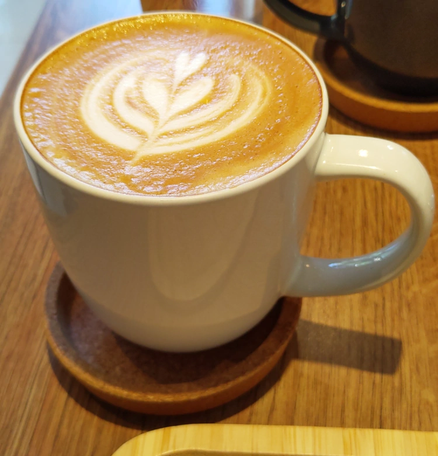
轆轆 很棒，如果有機會到附近，還要再訪。